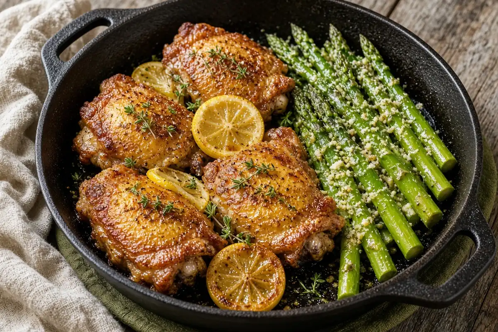

Lemon Herb Roasted Chicken Thighs with Garlic Butter Asparagus
Bone-in, skin-on thighs rubbed under the skin with lemon, garlic, and fresh herbs and roasted crisp, with parmesan garlic butter asparagus from the skillet.

8 servings
By
Yield: 8 servings
Prep:
Cook:
Total:
Difficulty: Easy
Ingredients
- 8 large bone-in, skin-on chicken thighs
- 3 Tbsp olive oil
- 3 Tbsp butter
- 6 cloves garlic, minced, divided
- 2 lemons, zested and juiced, plus wedges for serving
- 2 Tbsp each fresh rosemary, thyme, and parsley, chopped
- Salt and pepper, to taste
- 2 lb asparagus, trimmed
- 1/2 cup Parmesan cheese, freshly grated
Instructions
- Heat the oven to 400°F and line a sheet pan with foil. Pat the chicken thighs dry and season them well with salt and pepper.
- Mix the olive oil, lemon zest, lemon juice, two-thirds of the garlic, and the herbs. Rub it under the skin and all over each thigh, and set them skin side up on the pan.
- Roast 35 minutes, until the skin is crisp and golden and the thighs reach 165°F.
- When the chicken is nearly done, melt the butter in a large skillet over medium heat. Add the asparagus, season with salt and pepper, and cook 4 minutes, until crisp-tender.
- Add the rest of the garlic, toss 30 seconds, and take the skillet off the heat. Sprinkle with the Parmesan.
- Serve each thigh with asparagus, extra herbs, and a lemon wedge.
Notes: For extra-crisp skin, broil the thighs for the last few minutes. Thighs are even juicier taken to 175°F.